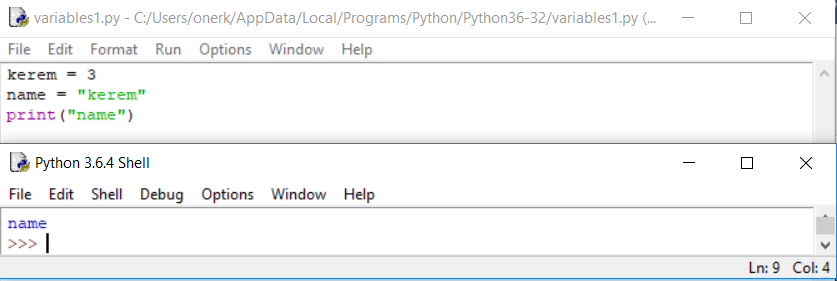

Variables
Variables are used to store data on your program. For example, you need to keep track of number of apples in a crate, or name of a student, or a number which has decimals, or a statement that can be true or false. All those data are stored in different types of variables, you can think variables as x in math. You can give it any value you want. How do you declare a variable in python? It is as simple as writing your information on a paper like: cost -> 500$. In python:
| 1 | a=3 |
Here we created a variable called “a” and its value is 3. You can use this value by using the variable’s name. If you want to print it, logically you should write
| 2 | print(a) |
It should print out 3, not the letter a. Why? In last lesson when we wrote “Hello World!” it printed out Hello World! However now it didn’t print out the letter a. Because when we write a computer detect it as a variable and use it value to make process. In here our process is printing so, it printed out 3.
Also, you can change variables’ values easily wrote
| 1 | a=3 |
| 2 | a=5 |
| 3 | print(a) |
Now it should print out 5, because the last value that we assigned to variable a was 5.

Variable Types
There are different kind of variables in programming, in our example a was an integer. How did we know that? It is because its value is an integer however, we didn’t declare that it is a variable. In most of the programming languages you should declare the type of the variable but, python isn’t strict about that topic. That means you can change the variable’s type easily. Before trying to change variable’s type, let’s see what type of variables are there.
String
Strings can store texts. It can be your name, a company’s name, a special text. Let’s try printing out your name with a string variable. First you need a declare a variable and assign its value as your name.
| 1 | name="Kerem" |
| 2 | print(name) |
As you can easily notice we used “” while declaring a string. It is because python can understand that it is a string if we write it between “”. If you didn’t understand that read it again and try it on IDLE. You should always try what you learn to get it completely. Here is a short question for you, what will be the output?
| 1 | kerem = 3 |
| 2 | name = "kerem |
| 3 | print("name") |
If you can't determine output, let's try it. Here are the results.
Output is name because, when we put “” between name program will see whole statement as a string. I hope I explained it briefly.
Boolean
Boolean’s value can be true or false. For example the state of a student’s exam can be pass or fail. We can store this data like this if student passed the exam (also we can change it)
| 1 | pass = True |
Float - Double
Float and double are used to store decimal numbers however, in python you don’t need to declare a variable as a float, double or integer. Therefore, you don’t really care about if it is a float or integer while writing in python. Difference between float and double that, float stores less decimal places than double. You can declare it like this:
| 1 | varfloat = 5.489 |
There are other kinds of variables too, but it is enough for beginning. Also you can change variables’ types. It is much simpler than other languages. Here is an example of changing from integer to string.
| 1 | varint = 3 |
| 2 | varstring = str(varint) |
Varstring will be and process as a string. You will see applications of casting (changing type of variable) when we learn more functions other than print.